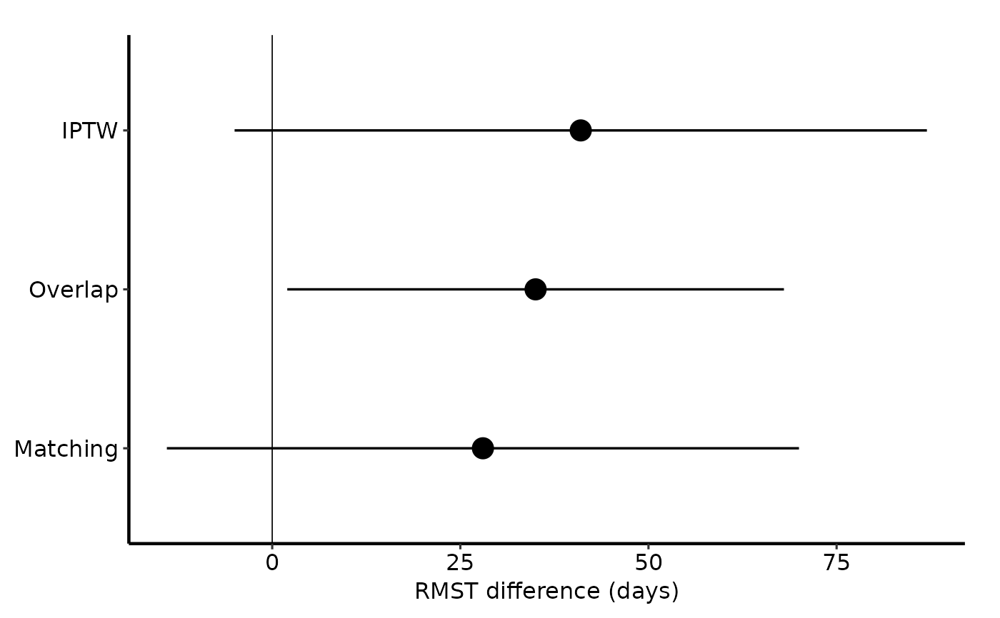

Validates a table of restricted mean survival time (RMST) differences, one
row per weighting estimator, and returns an hv_rmst_contrast object.
Call plot.hv_rmst_contrast() on the result for a bare dot-and-whisker
ggplot2 object: one point per estimator, a whisker for its interval, and a
vertical reference line at zero.
Usage
hv_rmst_contrast(
data,
estimator = "estimator",
diff = "diff_days",
lo = "lo_days",
hi = "hi_days",
...
)Arguments
- data
A data frame with one row per estimator, or a
ps_rmstobject (any list whose$tables$estimatesis a data frame).- estimator
Name of the column holding estimator labels. Default
"estimator". If it is a factor, its levels set the display order; otherwise the order of first appearance is used.- diff
Name of the numeric column with the RMST difference (in days). Default
"diff_days".- lo, hi
Names of the numeric columns with the lower and upper interval limits (in days). Defaults
"lo_days"and"hi_days".- ...
Ignored; present for S3 consistency.
Value
An object of class c("hv_rmst_contrast", "hv_data"): a list with
$dataThe estimates data frame, with the estimator column as supplied.
$metaNamed list:
estimator,diff,lo,hi(column names),estimator_levels,n_estimators,n_missing.$tablesEmpty list.
Details
The input follows the tables$estimates contract of
hvtiRpropensity::ps_rmst(): columns estimator, subset, weighting,
n, ess_treated, ess_control, rmst_treated, rmst_control, diff,
diff_days, lo_days, hi_days and n_failed, where a positive diff
favours the treated arm. Only the estimator, difference and interval
columns are used here. hvtiRpropensity is not required: pass a plain data
frame, or the ps_rmst object itself and its $tables$estimates is read.
See also
plot.hv_rmst_contrast(), hv_rmst_curves()
Other Propensity Score & Matching:
hv_mirror_hist(),
hv_rmst_curves(),
plot.hv_mirror_hist(),
plot.hv_rmst_contrast(),
plot.hv_rmst_curves(),
sample_covariate_balance_data()
Examples
est <- data.frame(
estimator = factor(c("IPTW", "Overlap", "Matching"),
levels = c("IPTW", "Overlap", "Matching")),
diff_days = c(41, 35, 28),
lo_days = c(-5, 2, -14),
hi_days = c(87, 68, 70)
)
rc <- hv_rmst_contrast(est)
rc
#> <hv_rmst_contrast>
#> Estimators : 3 (IPTW, Overlap, Matching)
#> Difference : diff_days [lo_days, hi_days]
plot(rc) +
ggplot2::labs(y = NULL) +
theme_hv_manuscript()
